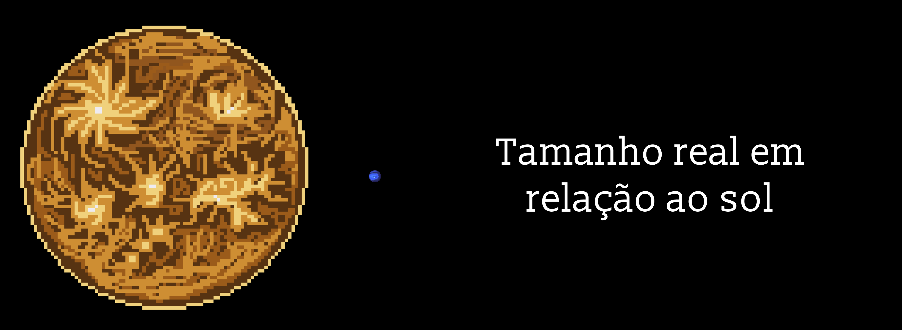

Netuno: o planeta encontrado pela matemática
Netuno é o oitavo e mais distante planeta do Sistema Solar. Ele foi o primeiro planeta descoberto por cálculos antes de ser visto: os astrônomos perceberam que a órbita de Urano tinha pequenos desvios, como se algo invisível o puxasse. Em 1846, o matemático francês Urbain Le Verrier calculou onde esse "algo" deveria estar, e o astrônomo alemão Johann Galle apontou o telescópio para o lugar e encontrou Netuno. Por sua cor azulada, recebeu o nome do deus romano dos mares. Ele não pode ser visto a olho nu.
Um azul que não era bem assim
Durante décadas, Netuno apareceu nos livros com um azul intenso, bem mais forte que o de Urano. Mas, em 2024, cientistas reprocessaram as imagens antigas e mostraram que as fotos tinham sido realçadas para destacar detalhes. Na verdade, as cores dos dois planetas são bem parecidas: um azul-esverdeado suave, com Netuno só um pouquinho mais azul.
Um ano de 165 anos
Netuno está tão longe que a luz do Sol leva cerca de 4 horas para chegar até ele. Um dia lá dura cerca de 16 horas, mas um ano leva 165 anos terrestres. Desde que foi descoberto, ele completou apenas uma volta ao redor do Sol, em 2011.

Frio, nublado e com estações de 40 anos
No topo das nuvens de Netuno, a temperatura fica em torno de −200 °C. Lá no alto, flutuam nuvens brancas feitas de gelo de metano, que aparecem e somem com o passar dos anos. Como o eixo de Netuno é inclinado, parecido com o da Terra, ele também tem estações do ano, mas cada uma dura cerca de 40 anos. E o clima de lá parece até sentir o humor do Sol: entre 2019 e 2023, as nuvens de Netuno quase desapareceram, e os cientistas perceberam que elas aumentam e diminuem seguindo o ciclo de atividade solar, mesmo a cerca de 4,5 bilhões de quilômetros de distância.
Os ventos mais fortes do Sistema Solar
Mesmo tão longe do calor do Sol, Netuno tem os ventos mais rápidos de todos os planetas, chegando a cerca de 2.000 km/h, mais que a velocidade do som na Terra. Parte da energia vem de dentro do próprio planeta, que libera mais que o dobro do calor que recebe do Sol. Em 1989, a sonda Voyager 2 fotografou uma tempestade gigante, a Grande Mancha Escura, do tamanho da Terra. Poucos anos depois, o telescópio Hubble mostrou que ela havia desaparecido.
Tritão, a lua que anda para trás
Netuno tem 16 luas conhecidas e anéis finos e escuros. A maior lua, Tritão, é um caso único: gira ao redor de Netuno no sentido contrário ao da rotação do planeta. Por isso, os cientistas acreditam que ela não nasceu ali, mas era um corpo gelado que foi capturado pela gravidade de Netuno. Tritão é um dos lugares mais frios já visitados, com cerca de −235 °C, e mesmo assim tem gêiseres que lançam nitrogênio a quilômetros de altura. Aos poucos, ela está se aproximando do planeta e, daqui a bilhões de anos, deve se despedaçar e formar um novo anel.
Uma única visita
Assim como Urano, Netuno foi visitado por uma só sonda: a Voyager 2, que passou por ele em 1989, doze anos depois de sair da Terra. Tudo o que sabemos de perto sobre o planeta vem dessa rápida passagem e das observações de telescópios como o Hubble e o James Webb.
Distante, gelado e varrido por ventos furiosos, Netuno encerra a lista dos planetas do Sistema Solar e mostra que, às vezes, dá para encontrar um mundo inteiro só com lápis, papel e matemática.